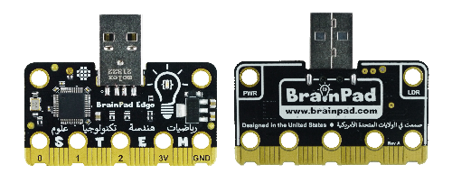
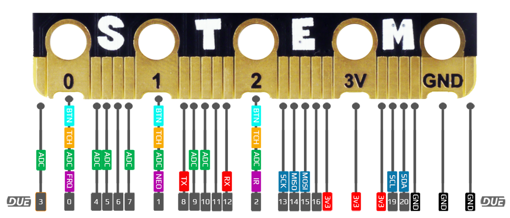
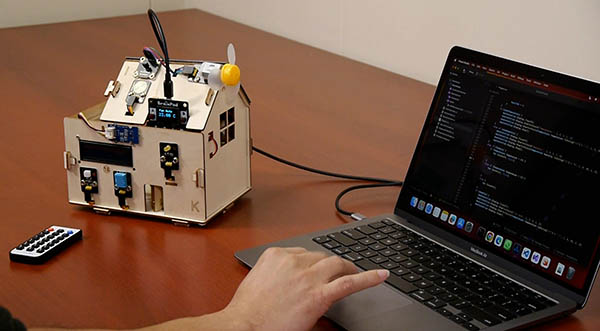
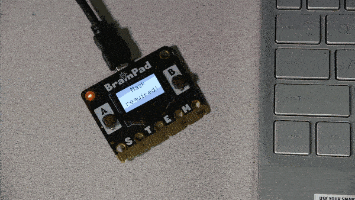
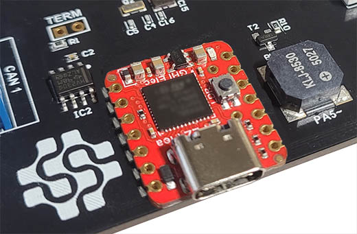

BrainPad
Educators now have the power to use their beloved language-of-choice with BrainPad devices, thanks to the power of the DUE platform.
Both BrainPad Pulse and BrainPad Edge are fully supported. However, BrainPad Pulse include additional natively-supported, which are the display and the buzzer.
BrainPad Pulse

BrainPad Edge 

On-board Components
| Pulse | Edge | |
|---|---|---|
| LED | ✓ | ✓ |
| Button A | ✓ | ✓ |
| Button B | ✓ | |
| LCD | ✓ | |
| Sound | ✓ |
Visit the BrainPad website to learn about the product and see purchasing options.
Getting Started
The DUE getting started page shows the steps needed to start using the DUE Link ecosystem and coding options.
Hardware Demos
The edge connector on the supported BrainPad hardware combined with the ease of the DUE platform, open up many possibilities to try the existing accessories available on the market. Here are just a few:
Smart House
This example demonstrates the extensibility of the DUE platform. Using the DUE library from within full .NET. See the code samples repo for all the available sensors. We added a BrainClip IR remote control to our demo.

A.I. Mask Detector
Harnessing the power of A.I. on a tiny micro-controller is a challenge, but easy work for the DUE platform. In this example full Python is used with the DUE platform connecting the pieces together.
A.I. Mask Detector Sample Repo

NeoPixel Matrix
NeoPixel Matrix panels pair well with the DUE platform, because NeoPixel support is built-in. Using DUE you can quickly create games, images, or led-effects. In our samples repo, we demonstrate using DUE Script, Python, and .NET. and make a simple Falling Bird Game.

BrainGamer Sketch
Creating art is easy when you pair the BrainPad Pulse with the BrainGamer

Prototyping

The FEZ Single board computers (SBC) are excellent for building projects. They utilize the same ecosystem as the BrainPad but provides a smaller form factor. See the FEZ Page.